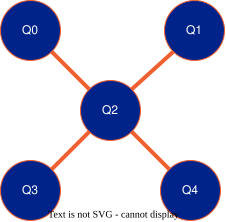

QuantWare Soprano D2
This is a 5-Qubit superconducting transmon device connected in a star topology:

Device topology of 5-Qubit QuantWare Soprano D2
The five flux-tunable transmon qubits are labelled Q0, Q1, Q2, Q3 and Q4. The vertices linking Q2 to the other qubits represent fixed two-qubit resonator couplers.
Single Qubit Hamiltonian
The individual transmon qubits have:
A charge line for \(\sigma_x\) and \(\sigma_y\) control (i.e. qubit rotations about \(x\) and \(y\) axes)
A flux line for \(\sigma_z\) control (i.e. energy splitting)
A readout resonator (note that all readout resonators are interfaced via a shared multiplexed signal line)
The qubits follow the standard Hamiltonian (under truncation of the Taylor series for cosine arising from the Josephson junction’s nonlinearity):
where the first line describes the individual qubit \(q\), the second line describes the coupling of the qubit to its charge line, while the third line describes the coupling of the qubit to its readout resonator. The qubit angular frequency \(\omega_q\) is tunable via its flux line up to its maximum frequency \(\omega_q^\max\). The qubit anharmonicity (the perturbation lowers the energy separation between the first and second excited states) \(\alpha\) also changes from its maxumum \(\alpha^\max\) when tuning the flux line. The charge line operates around the qubit frequency, whereas the resonator operates in the dispersive limit and does not change the qubit population. The effective two-level system comprised of the qubit and its charge-line is (under the rotating wave approximation):
where \(\omega\) and \(\varphi\) represent the drive frequency and phase of the RF signal applied on the charge line. The amplitude of the charge-line RF signal is \(E_{ac}=\hbar g_c\sqrt{N+1}\) (with \(N\) being the number of photons in the charge line). Notice that when the RF frequency in the drive line is on resonance with the qubit, the rotations are purely about an axis (with polar angle $varphi$) on the \(xy\) plane.
For readout, the resonator frequency shifts by \(2\chi\) when the qubit is in the excited state (relative to when it is in the ground state) with:
where \(\Delta=\omega_q-\omega_r\) and \(\Sigma=\omega_q+\omega_r\).
The following table lists the typical fixed device parameters.
Qubit |
\(\omega_q\) (GHz) |
\(\alpha\) (MHz) |
\(\omega_r\) (GHz) |
\(\chi\) (kHz) |
|---|---|---|---|---|
Q0 |
5.141 |
-214.4 |
7.263 |
-363.3 |
Q1 |
5.119 |
-216.0 |
7.412 |
-375.0 |
Q2 |
5.882 |
-204.9 |
7.548 |
-405.8 |
Q3 |
5.762 |
-190.3 |
7.707 |
-589.0 |
Q4 |
5.720 |
-194.2 |
7.858 |
-374.0 |
For the latest set of device parameters, refer to the NQCT cloud dashboard.
Two-Qubit Hamiltonian
The qubits are linked via fixed resonator couplers. The effective coupling Hamiltonian over the first three energy levels is:
where the three anti-crossings appear at:
\(J\): \(\omega_1\approx\omega_2\)
\(\zeta_{02}\): \(\omega_1\approx\omega_2-\alpha_2\)
\(\zeta_{20}\): \(\omega_1\approx\omega_2+\alpha_1\)
with \(\omega_i\) being the qubit frequency and \(\alpha_i\) the anharmonicity of the respective qubits. A typical controlled-phase (e.g. CZ) operation involves tuning to the \(\zeta_{20}\) anti-crossing to perturb the \(\lvert11\rangle\) state. Note that when including the individual qubit Hamiltonians, a large energy difference between the qubits will disable the two-qubit gate
The typical two-qubit parameters are:
Coupling |
\(J\) (MHz) |
\(\zeta_{02}\) (MHz) |
\(\zeta_{20}\) (MHz) |
|---|---|---|---|
Q2/Q0 |
NaN |
8.32 |
8.51 |
Q2/Q1 |
NaN |
8.20 |
9.03 |
Q2/Q3 |
NaN |
7.75 |
7.75 |
Q2/Q4 |
NaN |
10.8 |
10.8 |
For the latest set of device parameters, refer to the NQCT cloud dashboard.